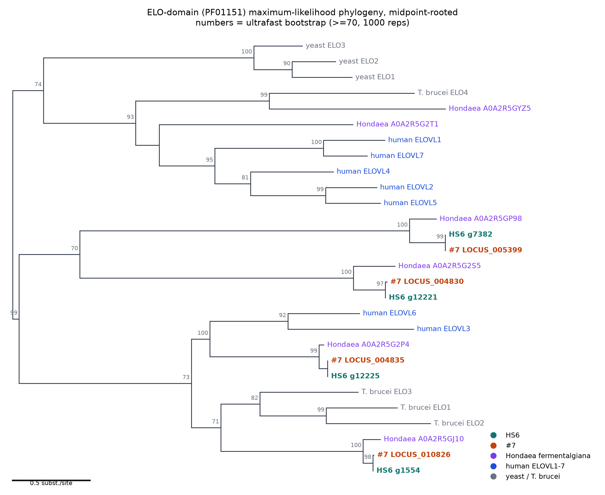
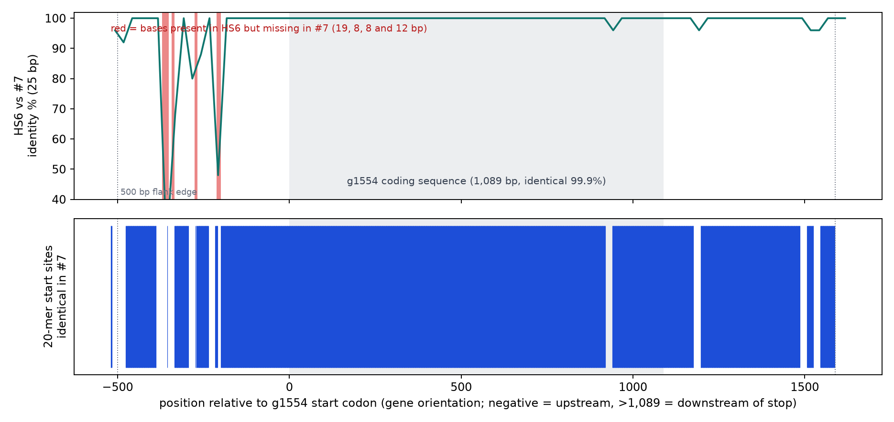

All four ELO-domain elongases in HS6 and #7, which of them is the ELOVL6-type gene, a homology-arm knockout design for g12225 that works in both strains, and a first-pass test-plasmid set for episomal maintenance in Schizochytrium.
Nothing on this page has been tested in the lab. The knockout and plasmid constructs are in-silico designs (sizes, restriction sites, ORF translations and sequence specificity were checked, but nothing was sequenced or transformed). Replication and centromere elements are sequence-based hypotheses. Every file mentioned is downloadable from the tables at the bottom.
Scanning the whole HS6 and #7 proteomes with the Pfam ELO domain model (PF01151, curated threshold; a looser E-value added nothing) finds exactly 4 proteins in each strain. A translated-BLAST scan of both raw genomes found no unannotated elongase loci. The genes pair one-to-one between strains:
| HS6 | #7 | HS6 vs #7 protein identity | Closest Hondaea fermentalgiana protein | Identity to it |
|---|---|---|---|---|
| g12225 (408 aa) | LOCUS_004835 | 100% | A0A2R5G2P4 | 87.3% |
| g1554 (362 aa) | LOCUS_010826 | 99.7% | A0A2R5GJ10 | 77.3% |
| g12221 | LOCUS_004830 | 99.2% over 255 aa | A0A2R5G2S5 | 67.7% |
| g7382 | LOCUS_005399 | 98.8% | A0A2R5GP98 | 67.9% |
g12221 and g7382 are longer in HS6 than in #7 (417 vs 255 aa, and 1,234 vs 874 aa); the ELO domain regions match, so this looks like a gene-model difference, not unchecked biology. In both strains g12221 and g12225 sit about 12 kb apart on one scaffold.

g12225 and its #7 and Hondaea counterparts (bootstrap 99) join human ELOVL3 and ELOVL6 (bootstrap 100): the ELOVL3/6 subfamily. g1554 and its counterparts (bootstrap 100) sit outside that group, closer to T. brucei ELO1–3 (bootstrap 71, moderate). So g1554 is a divergent paralog, not a second ELOVL6, and g12225 is the better ELOVL6-type target. The tree cannot separate ELOVL6 from ELOVL3 within their shared group, and which fatty acids each gene actually elongates is untested. Midpoint-rooted, ELO domain only (28 sequences, 242 columns, model Q.YEAST+F+I+R4).
A collaborator’s g1554 PCR gives the expected product in HS6 but none in #7. The gene itself is intact in #7, and across 520 bp upstream to 520 bp downstream (about 2.1 kb) the two strains differ at only 12 places: 7 substitutions and 5 deletions totalling 48 bp, with a single coding-sequence difference (A940G, M314V). A primer fails in #7 only if it overlaps one of those spots, with a 3′-end overlap the worst case.

Where a primer sits matters: 74% of possible 20-mer sites in the upstream 500 bp and 88% downstream are identical in #7, but the outermost 20 bp of the upstream flank have no conserved site (0 of 20) and the outer edge of the downstream flank has few (3 of 21). A primer placed at the very ends of the ±500 bp flank files would be expected to fail in #7. This is a hypothesis until the primer sequences are checked. A pair that matches exactly in both strains (1,725 bp in HS6, 1,678 bp in #7) and an internal control pair are in the downloads.
Design: replace the whole 1,227 bp g12225 coding sequence (identical in both strains) with a selectable-marker cassette flanked by 800 bp HS6 arms placed directly against the start and stop codons, one construct for both strains. The marker is not chosen yet.
| Arm | Length | HS6 vs #7 identity | Differences |
|---|---|---|---|
| 5′ arm (upstream of ATG) | 800 bp | 95.1% | 11 substitutions + 6 indels (29 bp; the largest is a 16 bp HS6-only block); longest identical stretch 160 bp |
| 3′ arm (downstream of stop) | 800 bp | 98.9% | 9 substitutions, no indels; 194 identical bases up to the stop codon |
Without Cas9, recombination efficiency depends on arm identity, so the 5′ arm in #7 is the main risk; #7 versions of both arms are provided in case a strain-specific 5′ arm is needed.
| Primers (all match exactly in both strains, one site per genome) | Forward | Reverse | HS6 / #7 product |
|---|---|---|---|
| Outer pair (diagnostic, outside both arms) | GAAGAGCTCGTGGTACGTTGA | GCATACGAGCAGCCTTATCCT | 3,903 / 3,890 bp |
| Internal CDS pair (band = gene present) | TTTGGTGTACGCTGCCCTTAT | CAGTGCCAACAACCATCTGTG | 665 / 665 bp |
| 5′ arm amplification | CGAACAGGCCCACGAGCTGTTT | GGTCCCAAGAGTTCCGTCTACT | 800 bp arm |
| 3′ arm amplification | ATCTTCGACGAGGTCGATCAAC | TTCTATTCCCGGGTCTTCTTGC | 800 bp arm |
Expected knockout outer-pair product = wild-type product − 1,227 bp + cassette length. Marker-side junction primers can only be designed once the cassette is chosen.
A replicating plasmid needs a replication/maintenance element, expression elements and host-compatible codons. HS6 genome: 61.6 Mb, 34 scaffolds, GC 45.1%.
| Element | What the screen found | Confidence |
|---|---|---|
| Telomere repeat | A 5-base unit (AACCT on the strand shown, the TTAGG type) forms 320–830 bp tandem arrays at 41 of 68 scaffold ends. Two end sequences are provided as seeds for a linear plasmid. | Strong |
| ARS-like (replication-origin-like) | 254 AT-rich (≥78.5%) intergenic regions of 300 bp or more that are single-copy, outside repeat families and conserved in #7. 81 lie between divergently transcribed genes (probably promoters), 117 between same-direction genes, 56 between convergent genes. | Hypothesis; yeast-style features, no origins mapped in this organism |
| Native promoters and terminators | 202 genes in the top 5% by expression and steady across all six RNA-seq samples (CV ≤0.25), with free flanking space and no repeats; the top 15 listed are also conserved in #7 (94–100% identity). Most conventional: g227 (elongation factor 2, CV 0.16) and g12164 (ADP-ribosylation factor). | Steady across three time points in one condition only |
| Codon usage | 15,960 coding sequences, GC3 47.2%, close to the genome average, so codon adaptation of a marker should be modest. | Solid |
| Centromere | None identified. Every scaffold has a gene-poor stretch of 25–105 kb, 27 of 34 in the interior, but they are mostly not repeat-rich (typically 1–5% repeats; the repeat-rich ones are mainly near scaffold ends) and could be annotation gaps. A heterologous yeast CEN6 is used as a test arm instead. No CEN6-like sequence was found: a search with CEN6 alone gave only chance-level hits (comparable to a shuffled control), and a scan for the point-centromere architecture (CDEI motif, an AT-rich spacer of 70–100 bp, a CDEIII core) found 0 matches in HS6 and 0 in #7. Point centromeres are largely a budding-yeast feature, so CEN6 may do nothing in this host (the scan is strict and could miss a highly diverged one). | Weak; confirmation needs CENH3 ChIP-seq or Hi-C |
Backbone pUC19c (E. coli origin and ampicillin gene unchanged), a codon-adapted zeocin-resistance gene (Sh ble) driven by the native g227 promoter and terminator, and a PacI/AscI slot for the replication candidate. All seven maps pass in-silico checks (each cloning site once, ble translates to the reference protein, bla intact, backbone unchanged outside the slot).
| Plasmid | Size | Purpose |
|---|---|---|
| pSCHZ_noARS_control | 4,540 bp | Essential control: no replication element, so any colonies are background |
| pSCHZ_ARS (Scaffolds_18, _19, _10 candidates) | 5,040 / 5,090 / 5,140 bp | One native ARS-like candidate each |
| pSCHZ_CEN6-ARSH4_yeast | 5,051 bp | Yeast CEN6/ARSH4 (511 bp, taken from pRS416 and matched to yeast chromosomes VI and II) |
| pSCHZ_ARS18_plus_CEN6 | 5,165 bp | Native candidate plus yeast CEN6, to ask whether a centromere adds stability |
| pSCHZ_TEL | 5,276 bp | Cut with PmeI for a 5,268 bp linear molecule with native telomere blocks at both ends |
Zeocin is less active at high salt, and Schizochytrium media are often marine-type: run a kill-curve on HS6 and #7 first, and swap the marker if wild-type tolerates it. PCR cannot tell an episome from an integrated plasmid; the diagnostic primer workbook (9 pairs, all with at least one plasmid-only primer, so host DNA alone cannot give a band) lists the ways to separate them. Whether the yeast elements do anything in Schizochytrium is unknown.
Position-verified against the HS6 reference, 74 Sanger amplicons and 54 qPCR pairs. A BLAST specificity check showed that most of this panel is not unique in this genome (Sanger: 6 clean, 10 modest, 12 elevated, 46 severe; qPCR: 11 / 8 / 10 / 25). The severe cases trace to genuinely repeated sequence in the assembly, not to the design pipeline; only the clean tier is safe to order as-is. Full detail in the panel README.
Every file is served directly from this repository. Right-click a link and choose “save link as”, or open the folder on GitHub.
| File | Contents |
|---|---|
| ELOVL_g1554_g12225_HS6_vs_S7.xlsx | Differences for both genes (−520 to +520) plus full sequences (CDS, 500 bp flanks, protein) for HS6 and #7 |
| g1554_all_differences_HS6_vs_S7.tsv | The 12 g1554 differences, plain text |
| g1554_flank_conservation_by_site.tsv | For every 20-mer start site in the flanks, whether it is identical in #7 |
| g1554_primers_both_strains.tsv | Primers that match exactly in both strains |
| elovl_phylogeny.png, elovl_tree.contree, elovl_tree.iqtree, trimmed.aln.fa, input sequences | Tree figure, Newick tree with bootstrap support, IQ-TREE report, trimmed alignment, input proteins |
| HS6, #7 genome scans | Translated-BLAST hits used to look for unannotated elongase loci |
| g12225 locus alignment, g1554 locus alignment | HS6 vs #7 aligned loci with flanks (unaligned versions and summary alongside, in the same folder) |
| File | Contents |
|---|---|
| README.md | Full design notes |
| HS6_arms_final.fa, homology_arms_800bp.fa | The 800 bp HS6 arms; and the HS6 and #7 versions of both arms |
| arm_amplification_primers.tsv, genotyping_primers.tsv | Arm amplification and genotyping primers |
| arm_differences_vs_S7.tsv, locus_pm2500.aln.fa | Where the HS6 arms differ from #7; ±2.5 kb locus alignment |
| File | Contents |
|---|---|
| episomal/README.md, test_plasmids/README.md | Screen method and results; plasmid design and suggested test logic |
| plasmid_diagnostic_primers.xlsx | Diagnostic PCR primers for transformants, with expected product sizes on every plasmid |
| Plasmid maps (GenBank) and sequences (FASTA), one pair per plasmid, in test_plasmids/: noARS control, ARS Sc18, ARS Sc19, ARS Sc10, CEN6-ARSH4, ARS18+CEN6, TEL | Annotated circular maps |
| ARS_candidate_library.tsv, parts.fa | Six replication candidates with cloning primers; cassette parts and telomere blocks |
| ARS_like_candidates_classified.tsv, centromere_candidate_regions.tsv | 254 ARS-like regions with orientation class; 142 gene-poor stretches of 30 kb or more |
| expression_element_candidates.tsv, promoters_terminators.fa, codon_usage_HS6.tsv, telomere_seed_candidates.fa | Native promoter/terminator candidates and sequences; codon table; telomere seeds |
| File | Contents |
|---|---|
| README.md | Method, verification and the BLAST specificity finding |
| sanger_primers.tsv, qpcr_primers.tsv | Primer pairs, each annotated with its severity tier |
| flanking_500bp_context.tsv, .fasta | 500 bp upstream and downstream sequence around each mutation cluster |